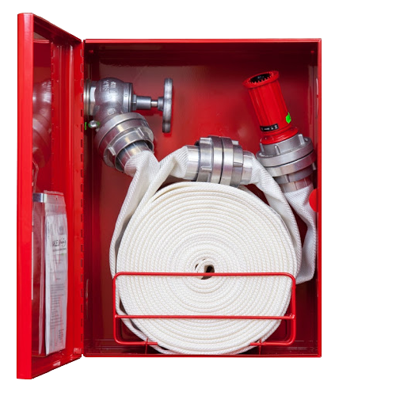
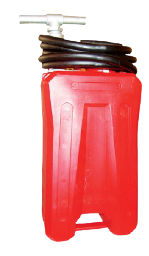
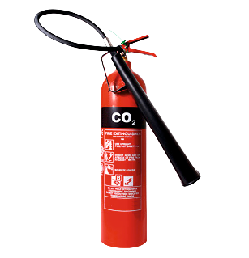

Монтира се в специална ниша на всеки етаж и се свързва със специално изграден водопровод. Състои се от шланг с дължина 20 метра, струйник, спирателен кран.
С кофпомпата работят двама или трима души. Единият помпа, вторият насочва струята към пожара, а при необходимост третият я зарежда с вода.
Предназначен е за гасене на начални пожари - двигатели с вътрешно горене, електрически машини, включително под напрежение, леснозапалими течности, ценни предмети и книжа.
